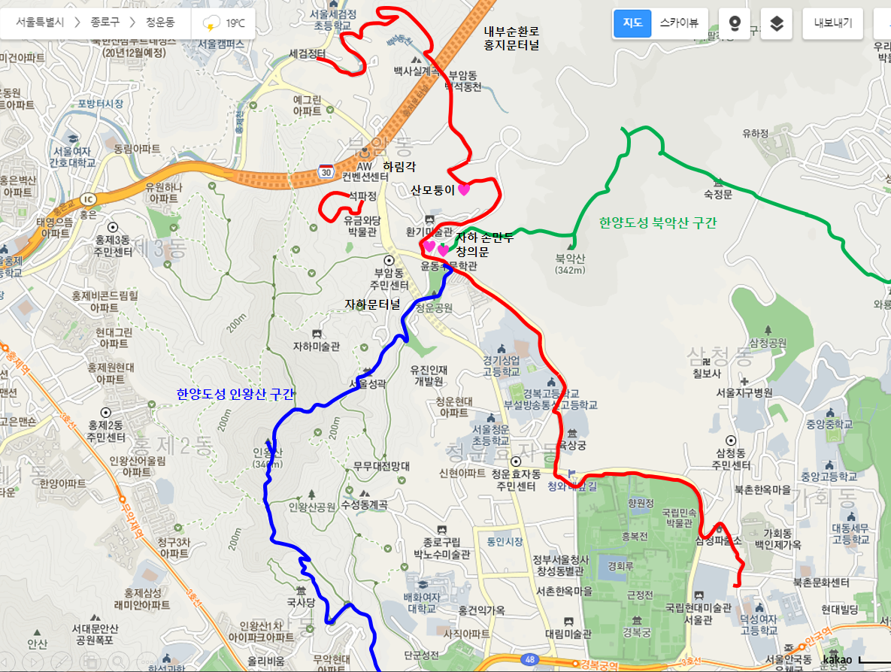
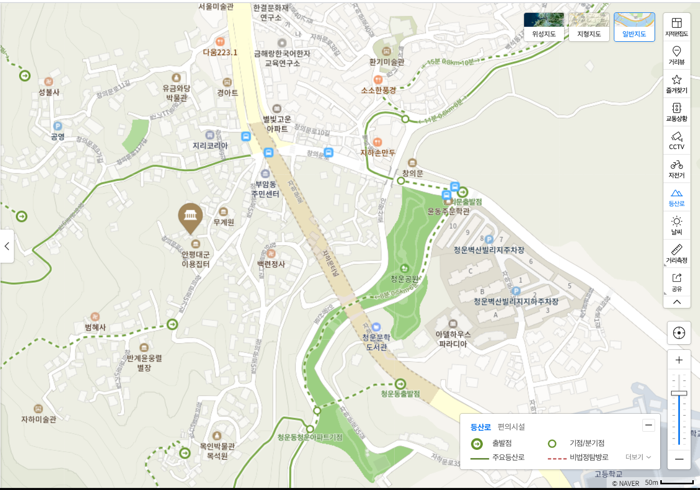

서울 부암동
|  |  |
| 2020년 04월 05일 |
서울미술관, 석파정: 코끼리바위/별채/소나무, 자하손만두, 세검정, 현통사 뒷길, 백사 별장터, 백사실계곡, 백석동천,
불암바위, 산모퉁이 카페, 경복고등학교, 청와대 앞 무궁화 동산, 경복궁 돌담길(청와대로), 보라 아이스크림 |
느낀 점, 배운 것
- 세검정을 좀 더 자세히 보고 싶다.
- 석파정은 멋있다. 흥선대원군의 집, 정원, 마당에서의 풍경 모두 멋지다.
- 경복궁 뒷길을 처음으로 걸어 봤다.